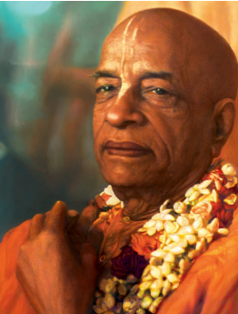

Welcome to New Vraja Dham
Bhakti-yoga meditation and spiritual preaching center based in Baton Rouge, Louisiana.

What to Expect
We cordially invite members of the Greater Baton Rouge community to join in congregational chanting (Kirtan), spiritual discourses on the Bhagavad Gita, and honoring sanctified vegetarian food (prasadam) in a warm and welcoming environment.
Visit Our Center
Our regular programs include Bhagavad Gita discussions, Sacred Sundays (Sunday Love Feast), instrument lessons, bhakti-yoga outreach at the local university (LSU), and a vegan/vegetarian feast. Whether you are new to bhakti-yoga or are a long-term practitioner, we warmly welcome all of you to visit and connect with our community.